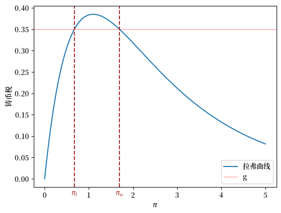
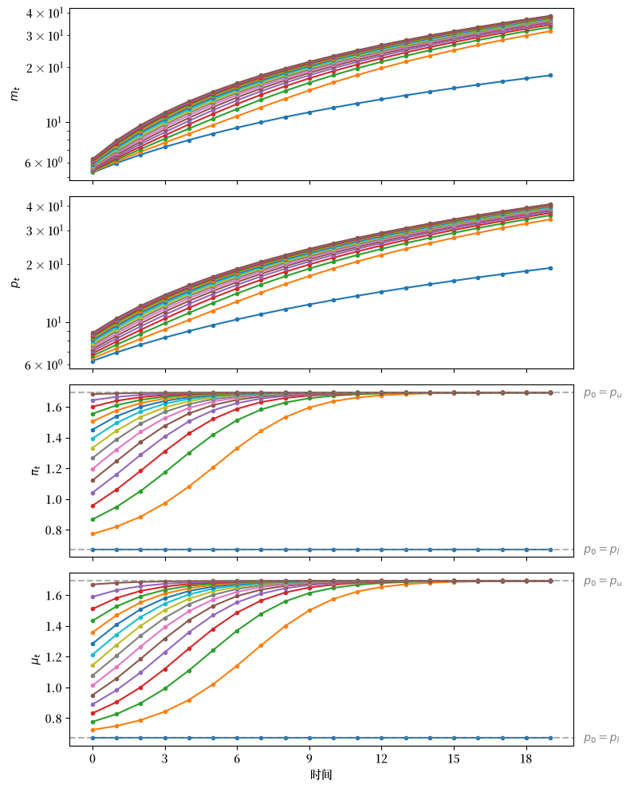
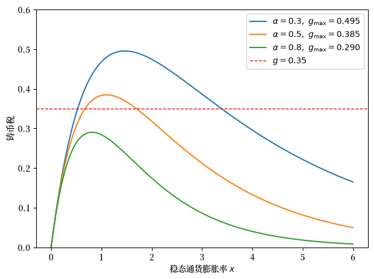

32. 通货膨胀税的拉弗曲线#
32.1. 概述#
本讲座研究了通货膨胀税的静态和动态拉弗曲线，使用的是讲座通过货币资助的政府赤字和价格水平中研究的模型的非线性模型版本。
我们采用了[Cagan, 1956]在其经典论文中使用的对数线性货币需求函数，而不是讲座通过货币资助的政府赤字和价格水平中使用的线性需求函数。
这一改变需要我们修改部分分析。
特别是,我们的动态系统在状态变量上不再是线性的。
然而,基于我们所谓的”方法2”的经济逻辑分析仍然保持不变。
我们将发现与讲座通过货币资助的政府赤字和价格水平中研究的结果类似的定性结果。
该讲座展示了本讲座中模型的线性版本。
与那个讲座一样,我们讨论以下主题:
政府通过印制纸币或电子货币征收的通货膨胀税
通货膨胀税率中存在两个静态均衡的动态拉弗曲线
在理性预期下的反常动态,系统趋向于较高的静态通货膨胀税率
与该静态通货膨胀率相关的奇特的比较静态分析,它表明通货膨胀可以通过运行更高的政府赤字来降低
这些结果为分析拉弗曲线与自适应预期做准备,该讲座研究了本模型的一个版本,使用一种”适应性预期”而不是理性预期。
该讲座将展示:
用适应性预期替代理性预期不改变两个静态通货膨胀率,但是\(\ldots\)
它通过使系统通常收敛于较低的静态通货膨胀率来逆转反常动态
现在通货膨胀可以通过运行较低的政府赤字来降低,从而出现了更合理的比较动态结果
32.2. 模型#
设:
\(m_t\) 为时间 \(t\) 初的货币供应量对数
\(p_t\) 为时间 \(t\) 的价格水平对数
货币需求函数为:
其中 \(\alpha \geq 0\)。
货币供应量的动态方程为:
其中 \(g\) 是政府支出中通过印钞来融资的部分。
Remark 32.1
请注意,虽然方程(32.1)在货币供应量和价格水平的对数上是线性的,方程(32.2)在水平值上是线性的。这需要我们调整在讲座通过货币资助的政府赤字和价格水平中使用的均衡计算方法。
32.3. 通货膨胀率的极限#
我们可以通过研究稳态拉弗曲线来计算 \(\overline \pi\) 的两个可能极限值。
因此,在稳态中
其中 \(x > 0\) 是货币供应量和价格水平的对数的共同增长率。
几行代数运算可以得出 \(x\) 满足的方程:
我们需要
这样通过印钞来融资才是可行的。
(32.3)的左侧是通过印钞筹集的稳态收入。
(32.3)的右侧是政府在时间 \(t\) 通过印钞筹集的商品数量。
稍后我们将绘制方程(32.3)的左右两侧。
但首先让我们编写代码来计算稳态 \(\overline \pi\)。
让我们先导入一些库
from collections import namedtuple
import numpy as np
import matplotlib as mpl
import matplotlib.pyplot as plt
from matplotlib.ticker import MaxNLocator
from scipy.optimize import fsolve
FONTPATH = "fonts/SourceHanSerifSC-SemiBold.otf"
mpl.font_manager.fontManager.addfont(FONTPATH)
plt.rcParams['font.family'] = ['Source Han Serif SC']
让我们创建一个namedtuple来存储模型的参数
CaganLaffer = namedtuple('CaganLaffer',
["m0", # t=0时货币供应量的对数
"α", # 货币需求的灵敏度
"λ",
"g" ])
# 创建一个 凯根拉弗 模型
def create_model(α=0.5, m0=np.log(100), g=0.35):
return CaganLaffer(α=α, m0=m0, λ=α/(1+α), g=g)
model = create_model()
现在我们编写计算稳态\(\overline \pi\)的代码。
# 定义π_bar的公式
def solve_π(x, α, g):
return np.exp(-α * x) - np.exp(-(1 + α) * x) - g
def solve_π_bar(model, x0):
π_bar = fsolve(solve_π, x0=x0, xtol=1e-10, args=(model.α, model.g))[0]
return π_bar
# 求解两个稳态的π
π_l = solve_π_bar(model, x0=0.6)
π_u = solve_π_bar(model, x0=3.0)
print(f'两个稳态的π是: {π_l, π_u}')
两个稳态的π是: (np.float64(0.6737147075333034), np.float64(1.6930797322614815))
我们找到两个稳态\(\overline \pi\)的值。
32.4. 稳态拉弗曲线#
以下图形展示了稳态拉弗曲线以及两个稳态通货膨胀率。
def compute_seign(x, α):
return np.exp(-α * x) - np.exp(-(1 + α) * x)
def plot_laffer(model, πs):
α, g = model.α, model.g
# 生成 π 值
x_values = np.linspace(0, 5, 1000)
# 计算对应的铸币税值
y_values = compute_seign(x_values, α)
# 绘制函数
plt.plot(x_values, y_values,
label=f'拉弗曲线')
for π, label in zip(πs, [r'$\pi_l$', r'$\pi_u$']):
plt.text(π, plt.gca().get_ylim()[0]*2,
label, horizontalalignment='center',
color='brown', size=10)
plt.axvline(π, color='brown', linestyle='--')
plt.axhline(g, color='red', linewidth=0.5,
linestyle='--', label='g')
plt.xlabel(r'$\pi$')
plt.ylabel('铸币税')
plt.legend()
plt.show()
# 稳态拉弗曲线
plot_laffer(model, (π_l, π_u))
findfont: Failed to find font weight normal, now using 600.
findfont: Failed to find font weight normal, now using 600.
{kind=link}

Fig. 32.1 稳态通胀的铸币税功能。棕色虚线代表 \(\pi_l\) 和 \(\pi_u\)。#
32.5. 初始价格水平的计算#
现在我们已经掌握了两个可能的稳态，我们可以计算两个函数 \(\underline p(m_0)\) 和 \(\overline p(m_0)\)，作为时间 \(t\) 时 \(p_t\) 的初始条件。这意味着我们需要找到对于所有 \(t \geq 0\)， \(\pi_t = \overline \pi\)。
函数 \(\underline p(m_0)\) 将会与较低的稳态通货膨胀率 \(\pi_l\) 相关联。
函数 \(\overline p(m_0)\) 将会与较高的稳态通货膨胀率 \(\pi_u\) 相关联。
def solve_p0(p0, m0, α, g, π):
return np.log(np.exp(m0) + g * np.exp(p0)) + α * π - p0
def solve_p0_bar(model, x0, π_bar):
p0_bar = fsolve(solve_p0, x0=x0, xtol=1e-20, args=(model.m0,
model.α,
model.g,
π_bar))[0]
return p0_bar
# 计算与 π_l 和 π_u 关联的两个初始价格水平
p0_l = solve_p0_bar(model,
x0=np.log(220),
π_bar=π_l)
p0_u = solve_p0_bar(model,
x0=np.log(220),
π_bar=π_u)
print(f'关联的初始 p_0s 是: {p0_l, p0_u}')
关联的初始 p_0s 是: (np.float64(5.615742247288046), np.float64(7.14478978438031))
32.5.1. 验证#
首先，让我们编写一些代码来验证，如果初始对数价格水平 \(p_0\) 取我们刚刚计算的两个值之一，那么通货膨胀率 \(\pi_t\) 将对所有的 \(t \geq 0\) 保持恒定。
下面的代码进行了验证。
# 实现上述伪代码
def simulate_seq(p0, model, num_steps):
λ, g = model.λ, model.g
π_seq, μ_seq, m_seq, p_seq = [], [], [model.m0], [p0]
for t in range(num_steps):
m_seq.append(np.log(np.exp(m_seq[t]) + g * np.exp(p_seq[t])))
p_seq.append(1/λ * p_seq[t] + (1 - 1/λ) * m_seq[t+1])
μ_seq.append(m_seq[t+1]-m_seq[t])
π_seq.append(p_seq[t+1]-p_seq[t])
return π_seq, μ_seq, m_seq, p_seq
π_seq, μ_seq, m_seq, p_seq = simulate_seq(p0_l, model, 150)
# 在稳态下检查 π 和 μ
print('π_bar == μ_bar:', π_seq[-1] == μ_seq[-1])
# 检查稳态下的 m_{t+1} - m_t 和 p_{t+1} - p_t
print('m_{t+1} - m_t:', m_seq[-1] - m_seq[-2])
print('p_{t+1} - p_t:', p_seq[-1] - p_seq[-2])
# 检验 exp(-αx) - exp(-(1 + α)x) = g
eq_g = lambda x: np.exp(-model.α * x) - np.exp(-(1 + model.α) * x)
print('eq_g == g:', np.isclose(eq_g(m_seq[-1] - m_seq[-2]), model.g))
π_bar == μ_bar: False
m_{t+1} - m_t: 1.6930797322614524
p_{t+1} - p_t: 1.693079732261424
eq_g == g: True
32.6. 计算均衡序列#
我们将采用类似于 通过货币资助的政府赤字和价格水平 中的 方法2。
我们将时间 \(t\) 的状态向量视为对 \((m_t, p_t)\)。
我们将 \(m_t\) 视为一个 自然状态变量，而 \(p_t\) 视为一个 跳跃 变量。
定义
让我们重写方程 (32.1) 为
我们将用以下伪代码来总结我们的算法。
伪代码
伪代码的核心是对以下从时间 \(t\) 的状态向量 \((m_t, p_t)\) 到时间 \(t+1\) 的状态向量 \((m_{t+1}, p_{t+1})\) 的映射进行迭代。
从时间 \(t \geq 0\) 给定的一对 \((m_t, p_t)\) 出发
接下来，计算上文所述的两个函数 \(\underline p(m_0)\) 和 \(\overline p(m_0)\)
现在按如下方式启动该算法。
设定 \(m_0 >0\)
设定一个 \(p_0 \in [\underline p(m_0), \overline p(m_0)]\) 的值，并在时间 \(t = 0\) 形成对 \((m_0, p_0)\)
从 \((m_0, p_0)\) 出发，对 \(t\) 进行迭代，直至 \(\pi_t \rightarrow \overline \pi\) 和 \(\mu_t \rightarrow \overline \mu\) 收敛
结果将表明：
如果它们存在，极限值 \(\overline \pi\) 和 \(\overline \mu\) 将是相等的
如果极限值存在，有两个可能的极限值，一个高，一个低
对于几乎所有初始对数价格水平 \(p_0\)，极限 \(\overline \pi = \overline \mu\) 是更高的值
对于两个可能的极限值 \(\overline \pi\) 中的每一个，存在一个独特的初始对数价格水平 \(p_0\)，它意味着所有 \(t \geq 0\) 的 \(\pi_t = \mu_t = \overline \mu\)
这个独特的初始对数价格水平解决了 \(\log(\exp(m_0) + g \exp(p_0)) - p_0 = - \alpha \overline \pi\)
上述关于 \(p_0\) 的方程源自 \(m_1 - p_0 = - \alpha \overline \pi\)
32.7. 拉弗曲线动态的不稳定性#
现在我们已经具备了从不同的 \(p_0\) 设定出发计算时间序列的能力，就像在通过货币资助的政府赤字和价格水平中那样。
# 从 p0_l 到 p0_u 生成一个序列
p0s = np.arange(p0_l, p0_u, 0.1)
line_params = {'lw': 1.5,
'marker': 'o',
'markersize': 3}
p0_bars = (p0_l, p0_u)
draw_iterations(p0s, model, line_params, p0_bars, num_steps=20)
{kind=link}

Fig. 32.2 从不同的初始值 \(p_0\) 开始，\(m_t\)（顶部面板，\(m\) 使用对数刻度），\(p_t\)（第二面板，\(p\) 使用对数刻度），\(\pi_t\)（第三面板）和 \(\mu_t\)（底部面板）的路径#
观察 Fig. 32.2 中的价格水平路径，我们发现几乎所有路径都收敛到稳态拉弗曲线中所示的较高通货膨胀税率，如图 Fig. 32.1 所示。
这再次证实了我们所说的在理性预期下的”反常”动态现象——系统收敛到两个可能的静态通货膨胀税率中较高的那个。
这些动态之所以”反常”，不仅是因为它们意味着选择通过印钞来为政府支出融资的货币和财政当局最终会施加比融资政府支出所需更高的通货膨胀税，还因为通过观察图 Fig. 32.1 中所示的稳态拉弗曲线，我们可以推断出以下”违反直觉”的情形：
该图表明，通过运行更高的政府赤字，即通过印钞筹集更多资源，可以降低通货膨胀。
Note
在研究本讲座模型线性版本的 通过货币资助的政府赤字和价格水平 中，同样的定性结果也普遍存在。
我们发现：
除了一条均衡路径之外，所有均衡路径都收敛于两个可能的静态通货膨胀税率中较高的那个
存在一条独特的均衡路径，它与关于政府赤字的减少如何影响静态通货膨胀率的”合理”论断相关联
正如在 通过货币资助的政府赤字和价格水平 中一样，基于合理性的考虑，我们再次建议选择收敛于较低静态通货膨胀税率的那条独特均衡路径。
我们将会看到，接受这一建议是我们在 一些不愉快的货币主义算术 中描述的”令人不快的算术”结果的一个关键要素。
在 拉弗曲线与自适应预期 中，我们将探讨 [Bruno and Fischer, 1990] 等人如何以其他方式论证我们的均衡选择的合理性。
32.8. 练习#
Exercise 32.1
峰值铸币税收入与财政限制。
在通货膨胀率 \(x\) 下的稳态铸币税为
a. 通过求导，令 \(L'(x) = 0\) 并求解 \(x\)，从解析角度验证 \(L(x)\) 在
处取得最大值。
b. 使用默认模型，根据解析公式计算 \(x^*\)，用 scipy.optimize.minimize_scalar 进行数值验证，并绘制拉弗曲线，同时用水平线标出 \(g_{\rm max} = L(x^*)\) 和基准赤字 \(g = 0.35\)。
c. 对于 \(g = g_{\rm max} + 0.01\)，在细分的 \(x\) 值网格上评估 \(L(x) - g\)，并解释如果政府试图为 \(g > g_{\rm max}\) 的赤字融资会发生什么。
Solution to Exercise 32.1
第a部分。 对 \(L(x)\) 求导：
整理可得：
由于 \(L''(x^*) < 0\)，这确实是一个最大值。
from scipy.optimize import minimize_scalar
α = model.α
x_star_analytic = np.log((1 + α) / α)
g_max = compute_seign(x_star_analytic, α)
print(f"解析解 x* = ln((1+α)/α) = {x_star_analytic:.6f}")
print(f"g_max = L(x*) = {g_max:.6f}")
result = minimize_scalar(lambda x: -compute_seign(x, α), bounds=(0, 10), method='bounded')
print(f"数值解 x* = {result.x:.6f}")
解析解 x* = ln((1+α)/α) = 1.098612
g_max = L(x*) = 0.384900
数值解 x* = 1.098612
x_values = np.linspace(0, 5, 1000)
y_values = compute_seign(x_values, α)
fig, ax = plt.subplots()
ax.plot(x_values, y_values, label=r'$L(x)$')
ax.axhline(g_max, color='red', linestyle='--',
label=f'$g_{{\\rm max}}={g_max:.4f}$')
ax.axhline(model.g, color='blue', linestyle='--', lw=1,
label=f'$g={model.g}$')
ax.axvline(x_star_analytic, color='grey', linestyle=':', lw=1,
label=f'$x^*={x_star_analytic:.4f}$')
ax.set_xlabel(r'稳态通货膨胀率 $x$')
ax.set_ylabel('铸币税')
ax.legend()
plt.tight_layout()
plt.show()
{kind=link}
第c部分。
g_infeasible = g_max + 0.01
x_grid = np.linspace(0, 10, 10_000)
residual = compute_seign(x_grid, α) - g_infeasible
print(f"g_max = {g_max:.6f}")
print(f"g_infeasible = {g_infeasible:.6f}")
print(f"max L(x) - g = {residual.max():.8f} (始终为负)")
g_max = 0.384900
g_infeasible = 0.394900
max L(x) - g = -0.01000004 (始终为负)
当 \(g > g_{\rm max}\) 时，方程 \(L(x) = g\) 对任何 \(x \geq 0\) 都没有实数解。
从经济学角度看，无论采用何种通货膨胀率，通货膨胀税都无法筹集到足够的收入来弥补赤字，因为政府已经超出了铸币税拉弗曲线的财政限制。
不存在静态均衡。
Exercise 32.2
两个稳态通货膨胀率如何依赖于赤字 \(g\)。
本讲座计算了固定基准赤字 \(g = 0.35\) 下的 \(\pi_l\) 和 \(\pi_u\)。
a. 对于从 \(0.05\) 到刚好低于 \(g_{\rm max}\) 范围内的 \(g\)，数值计算 \(\pi_l(g)\) 和 \(\pi_u(g)\)，并将它们绘制在同一图形上。
b. 描述极限行为： - 当 \(g \to 0^+\) 时，\(\pi_l(g)\) 和 \(\pi_u(g)\) 趋向于什么？ - 当 \(g \to g_{\rm max}^-\) 时，它们又趋向于什么？
c. 在你的图上标出基准 \(g = 0.35\)，读出这两个值，并确认它们与讲座中计算的 π_l 和 π_u 一致。
Solution to Exercise 32.2
α = model.α
x_star = np.log((1 + α) / α)
g_max = compute_seign(x_star, α)
g_grid = np.linspace(0.05, g_max * 0.999, 200)
π_l_curve, π_u_curve = [], []
for g in g_grid:
m_temp = create_model(α=α, g=g)
π_l_curve.append(solve_π_bar(m_temp, x0=0.3))
π_u_curve.append(solve_π_bar(m_temp, x0=3.0))
π_l_curve = np.array(π_l_curve)
π_u_curve = np.array(π_u_curve)
fig, ax = plt.subplots()
ax.plot(g_grid, π_l_curve, label=r'$\pi_l(g)$ - 低通胀稳态')
ax.plot(g_grid, π_u_curve, label=r'$\pi_u(g)$ - 高通胀稳态')
ax.axvline(model.g, color='grey', linestyle='--', lw=1,
label=f'基准 $g={model.g}$')
ax.set_xlabel('政府赤字 $g$')
ax.set_ylabel('稳态通货膨胀率')
ax.legend()
plt.tight_layout()
plt.show()
{kind=link}
第b部分。
print(f"当 g -> 0 时: π_l -> {π_l_curve[0]:.4f} (趋近于 0)")
print(f" π_u -> {π_u_curve[0]:.4f} (很大；趋近于无穷大)")
print(f"当 g -> g_max 时: π_l -> {π_l_curve[-1]:.4f}")
print(f" π_u -> {π_u_curve[-1]:.4f}")
print(f"x* = {x_star:.4f} (两个根在此汇合)")
当 g -> 0 时: π_l -> 0.0527 (趋近于 0)
π_u -> 5.9864 (很大；趋近于无穷大)
当 g -> g_max 时: π_l -> 1.0478
π_u -> 1.1512
x* = 1.0986 (两个根在此汇合)
当 \(g \to 0^+\) 时，曲线 \(L(x) = g\) 有一个接近 \(x = 0\) 的根（\(\pi_l \to 0\)），另一个根则在非常大的 \(x\) 处（\(\pi_u \to \infty\)）。
随着 \(g\) 上升趋向 \(g_{\rm max}\)，两个根会彼此靠近并在 \(x^* = \ln\bigl((1+\alpha)/\alpha\bigr)\) 处汇合。
第c部分。
idx = np.argmin(np.abs(g_grid - model.g))
π_l_bench = solve_π_bar(model, x0=0.3)
π_u_bench = solve_π_bar(model, x0=3.0)
print(f"在基准 g = {model.g} 处：")
print(f" 曲线得到的 π_l = {π_l_curve[idx]:.4f}，讲座中的 π_l = {π_l:.4f}")
print(f" 曲线得到的 π_u = {π_u_curve[idx]:.4f}，讲座中的 π_u = {π_u:.4f}")
print(f" 直接求解 = ({π_l_bench:.4f}, {π_u_bench:.4f})")
在基准 g = 0.35 处：
曲线得到的 π_l = 0.6696，讲座中的 π_l = 0.6737
曲线得到的 π_u = 1.7012，讲座中的 π_u = 1.6931
直接求解 = (0.6737, 1.6931)
Exercise 32.3
货币需求弹性 \(\alpha\) 的影响。
参数 \(\alpha\) 决定了实际货币需求对预期通货膨胀的敏感程度。
\(\alpha\) 越大，意味着随着通货膨胀上升，家庭会更大幅度地减少其实际余额。
a. 对于 \(\alpha \in \{0.3,\; 0.5,\; 0.8\}\)，计算 \(x^*(\alpha) = \ln\bigl((1+\alpha)/\alpha\bigr)\) 和 \(g_{\rm max}(\alpha) = \alpha^\alpha/(1+\alpha)^{1+\alpha}\)，然后将三条拉弗曲线绘制在同一坐标轴上。
b. 将赤字固定在 \(g = 0.35\)，检查对每个 \(\alpha\) 而言该赤字是否可行（即 \(g \leq g_{\rm max}(\alpha)\)），并对每个可行情形计算 \((\pi_l,\, \pi_u)\)。
c. 对于每个可行的 \(\alpha\)，从中点 \(p_0 = \tfrac{1}{2}(p_{0,l} + p_{0,u})\) 出发模拟20期，并将 \(\pi_t\) 绘制在同一张图上，以找出这些路径的共同点。
Solution to Exercise 32.3
第a部分。
alphas = [0.3, 0.5, 0.8]
x_values = np.linspace(0, 6, 1000)
fig, ax = plt.subplots()
for α in alphas:
y_values = compute_seign(x_values, α)
x_star_α = np.log((1 + α) / α)
g_max_α = compute_seign(x_star_α, α)
ax.plot(x_values, y_values,
label=fr'$\alpha={α}$, $g_{{\rm max}}={g_max_α:.3f}$')
print(f"α = {α}： x* = {x_star_α:.4f}， g_max = {g_max_α:.4f}")
ax.axhline(0.35, color='red', linestyle='--', lw=1, label='$g=0.35$')
ax.set_xlabel(r'稳态通货膨胀率 $x$')
ax.set_ylabel('铸币税')
ax.set_ylim([0, 0.6])
ax.legend()
plt.tight_layout()
plt.show()
α = 0.3： x* = 1.4663， g_max = 0.4955
α = 0.5： x* = 1.0986， g_max = 0.3849
α = 0.8： x* = 0.8109， g_max = 0.2904
{kind=link}

较大的 \(\alpha\) 会使拉弗曲线变得平坦和狭窄，从而降低政府能够筹集到的最大铸币税。
第b部分。
g = 0.35
print(f"g = {g} 时的可行性检查\n")
steady_states = {}
for α in alphas:
m_temp = create_model(α=α, g=g)
x_star_α = np.log((1 + α) / α)
g_max_α = compute_seign(x_star_α, α)
if g <= g_max_α:
pl = solve_π_bar(m_temp, x0=0.3)
pu = solve_π_bar(m_temp, x0=3.0)
steady_states[α] = (pl, pu)
print(f"α = {α}：可行 (g_max = {g_max_α:.4f})"
f" -> π_l = {pl:.4f}， π_u = {pu:.4f}")
else:
steady_states[α] = None
print(f"α = {α}：不可行 (g_max = {g_max_α:.4f} < g = {g})")
g = 0.35 时的可行性检查
α = 0.3：可行 (g_max = 0.4955) -> π_l = 0.5277， π_u = 3.3845
α = 0.5：可行 (g_max = 0.3849) -> π_l = 0.6737， π_u = 1.6931
α = 0.8：不可行 (g_max = 0.2904 < g = 0.35)
对于 \(\alpha = 0.8\)，最大铸币税低于 \(g = 0.35\)，因此不存在稳态均衡。
更高的货币需求敏感性收紧了通货膨胀税的财政限制。
第c部分。
num_steps = 20
fig, ax = plt.subplots()
for α in alphas:
if steady_states[α] is None:
continue
π_l_α, π_u_α = steady_states[α]
m_temp = create_model(α=α, g=g)
p0_l_α = solve_p0_bar(m_temp, x0=np.log(220), π_bar=π_l_α)
p0_u_α = solve_p0_bar(m_temp, x0=np.log(220), π_bar=π_u_α)
p0_mid = (p0_l_α + p0_u_α) / 2
π_seq_α, *_ = simulate_seq(p0_mid, m_temp, num_steps)
ax.plot(range(num_steps), π_seq_α,
marker='o', markersize=3, lw=1.5,
label=fr'$\alpha={α}$ ($\pi_u={π_u_α:.2f}$)')
ax.axhline(π_u_α, linestyle='--', lw=1, alpha=0.4)
ax.set_xlabel('时间步')
ax.set_ylabel(r'$\pi_t$')
ax.legend()
plt.tight_layout()
plt.show()
{kind=link}
对于每个可行的 \(\alpha\)，从中点 \(p_0\) 出发的路径都收敛到高通货膨胀稳态 \(\pi_u\)，这证实了在理性预期下，无论 \(\alpha\) 的值如何，反常动态都会出现。